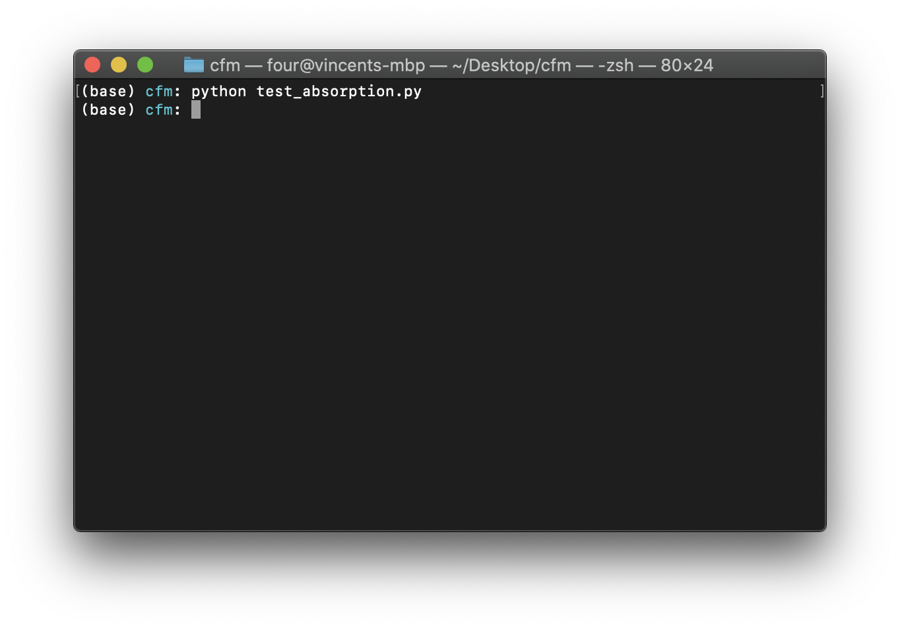
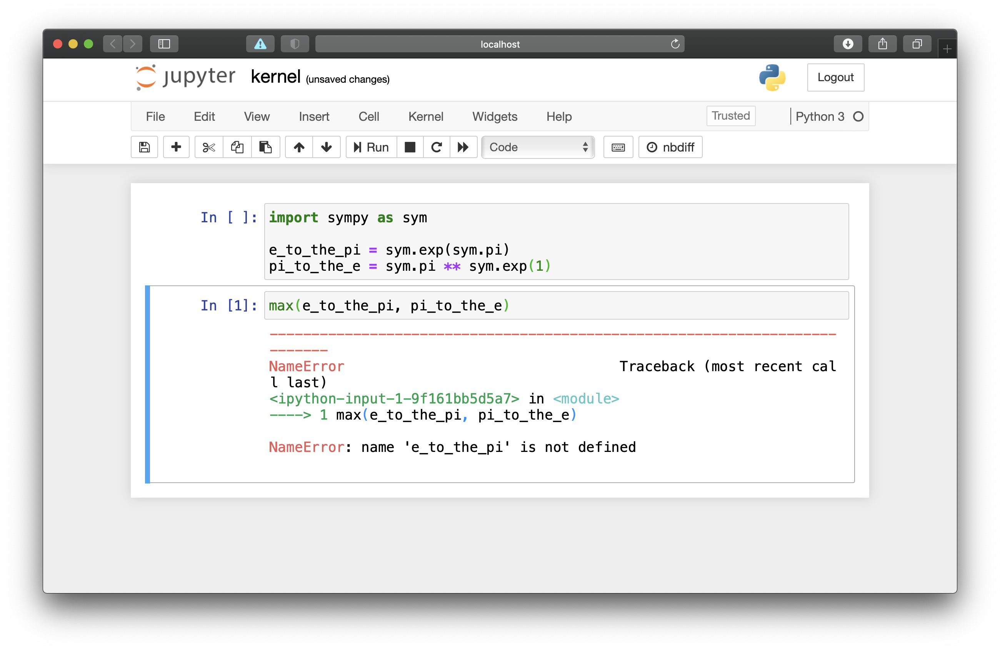
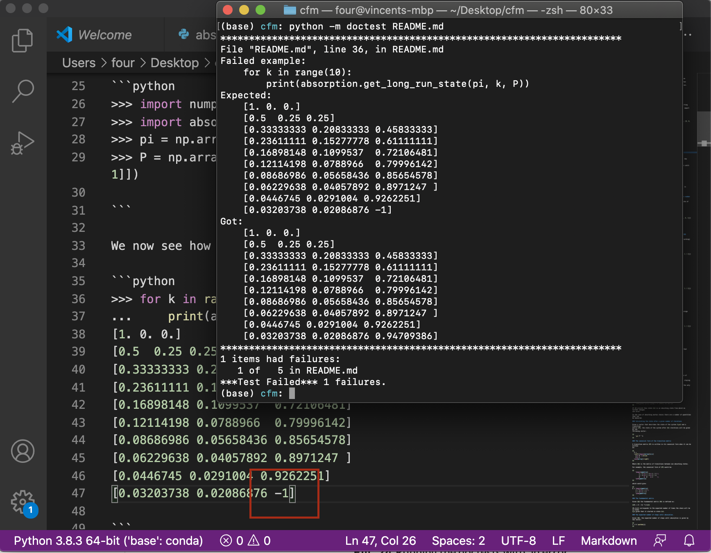

Tutorial#
In this tutorial you will write code to ensure the correctness of the software you have written in Tutorial and Tutorial.
The software for absorption.py is in fact across two separate files:
absorption.py: the source code. You will check this using unit testsREADME.md: the documentation. You will check this using doc tests.
Writing tests for code#
Recalling the code written in absorption.py in Tutorial,
there are 4 functions that need to be tested:
get_long_run_stateextract_Qcompute_Ncompute_t
In the directory that contains absorption.py we will now create a new Python
script called: test_absorption.py.
Write the following functions to test each of the functions in
absorption.py:
import numpy as np
import absorption
def test_long_run_state_for_known_number_of_states():
"""
This tests the `long_run_state` for a small example matrix
"""
pi = np.array([1, 0, 0])
P = np.array([[1 / 2, 1 / 4, 1 / 4], [1 / 3, 1 / 3, 1 / 3], [0, 0, 1]])
pi_after_5_steps = absorption.get_long_run_state(pi=pi, k=5, P=P)
assert np.array_equal(pi_after_5_steps, pi @ np.linalg.matrix_power(P, 5)), "Did not get expected result for pi after 5 steps"
def test_long_run_state_when_starting_in_absorbing_state():
"""
This tests the `long_run_state` for a small example matrix.
In this test we start in the absorbing state, the state vector should not
change.
"""
pi = np.array([0, 0, 1])
P = np.array([[1 / 2, 1 / 4, 1 / 4], [1 / 3, 1 / 3, 1 / 3], [0, 0, 1]])
pi_after_5_steps = absorption.get_long_run_state(pi=pi, k=5, P=P)
assert np.array_equal(pi_after_5_steps, pi)
test_long_run_state_for_known_number_of_states()
test_long_run_state_when_starting_in_absorbing_state()
Tip
The two functions we have written do not include a return statement but
instead include an assert statement. An assert is followed by two values
separated by a comma:
A boolean that is to be
TrueorFalse.A string that is output if the boolean is `False.
To run those tests we will run the script at the command line:
$ python test_absorption.py
When running the tests if everything has been done correctly there will be no output: the 2 functions we have written have been called and the assertions have passed. See Figure Running the tests with no errors..
{kind=link}

Fig. 35 Running the tests with no errors.#
For each of the four functions in absorption.py we can now add further tests
and ensure they are also called at the end. The full test_absorption.py file
should look like:
import numpy as np
import absorption
def test_long_run_state_for_known_number_of_states():
"""
This tests the `long_run_state` for a small example matrix
"""
pi = np.array([1, 0, 0])
P = np.array([[1 / 2, 1 / 4, 1 / 4], [1 / 3, 1 / 3, 1 / 3], [0, 0, 1]])
pi_after_5_steps = absorption.get_long_run_state(pi=pi, k=5, P=P)
assert np.array_equal(pi_after_5_steps, pi @ np.linalg.matrix_power(P, 5)), "Did not get expected result for pi after 5 steps"
def test_long_run_state_when_starting_in_absorbing_state():
"""
This tests the `long_run_state` for a small example matrix.
In this test we start in the absorbing state, the state vector should not
change.
"""
pi = np.array([0, 0, 1])
P = np.array([[1 / 2, 1 / 4, 1 / 4], [1 / 3, 1 / 3, 1 / 3], [0, 0, 1]])
pi_after_5_steps = absorption.get_long_run_state(pi=pi, k=5, P=P)
assert np.array_equal(pi_after_5_steps, pi)
def test_extract_Q():
"""
This tests that the submatrix Q can be extracted from a given matrix P.
"""
P = np.array([[1 / 2, 1 / 4, 1 / 4], [1 / 3, 1 / 3, 1 / 3], [0, 0, 1]])
Q = absorption.extract_Q(P)
expected_Q = np.array([[1 / 2, 1 / 4], [1 / 3, 1 / 3]])
assert np.array_equal(Q, expected_Q), f"The expected Q did not match, the code obtained {Q}"
def test_compute_N():
"""
This tests the computation of the fundamental matrix N
"""
P = np.array([[1 / 2, 1 / 4, 1 / 4], [1 / 3, 1 / 3, 1 / 3], [0, 0, 1]])
Q = absorption.extract_Q(P)
N = absorption.compute_N(Q)
expected_N = np.array([[8 / 3, 1], [4 / 3, 2]])
assert np.allclose(N, expected_N), f"The expected N did not match, the code obtained {N}"
def test_compute_t():
"""
This tests the computation of the number of steps until absorption t.
"""
P = np.array([[1 / 2, 1 / 4, 1 / 4], [1 / 3, 1 / 3, 1 / 3], [0, 0, 1]])
t = absorption.compute_t(P)
expected_t = np.array([11 / 3, 10 / 3])
assert np.allclose(t, expected_t), f"The expected t did not match, the code obtained {t}"
test_long_run_state_for_known_number_of_states()
test_long_run_state_when_starting_in_absorbing_state()
test_extract_Q()
test_compute_N()
test_compute_t()
Tip
The numpy.array_equal and numpy.allclose allow us to compare equality of
boolean arrays. They return True or False depending on whether the two
passed arrays are equal or approximately equal (respectively).
numpy.allclose should be used when comparing numpy arrays that might be
different due to numerical imprecision.
You can experiment by changing some of the code or the tests and see the way
the tests fail. See Figure Running the tests with an error in the source code.
where the following specific error has been introduced into absorption.py:
P.diagonal() == 1 is incorrect and should be P.diagonal() != 1.
{kind=link}

Fig. 36 Running the tests with an error in the source code.#
As and when you add more features to absorption.py you will also add tests.
Software is compromised of both code and documentation. So far you have tested our code, now you will test your documentation.
Testing documentation#
To ensure the python code written in documentation (see Tutorial) is correct we need to write the code using a specific format:
>>>to denote python code...to denote secondary lines of multi line python code.Nothing to denote the expected output.
As an example, in Tutorial, we had written:
```python
import numpy as np
import absorption
pi = np.array([1, 0, 0])
P = np.array([[1 / 2, 1 / 4, 1 / 4], [1 / 3, 1 / 3, 1 / 3], [0, 0, 1]])
```
We now see how the vector $\pi$ changes over time:
```python
for k in range(10):
print(absorption.get_long_run_state(pi, k, P))
```
This will give:
```
[1. 0. 0.]
[0.5 0.25 0.25]
[0.33333333 0.20833333 0.45833333]
[0.23611111 0.15277778 0.61111111]
[0.16898148 0.1099537 0.72106481]
[0.12114198 0.0788966 0.79996142]
[0.08686986 0.05658436 0.85654578]
[0.06229638 0.04057892 0.8971247 ]
[0.0446745 0.0291004 0.9262251]
[0.03203738 0.02086876 0.94709386]
```
We will modify the above to be:
```python
>>> import numpy as np
>>> import absorption
>>> pi = np.array([1, 0, 0])
>>> P = np.array([[1 / 2, 1 / 4, 1 / 4], [1 / 3, 1 / 3, 1 / 3], [0, 0, 1]])
```
We now see how the vector $\pi$ changes over time:
```python
>>> for k in range(10):
... print(absorption.get_long_run_state(pi, k, P))
[1. 0. 0.]
[0.5 0.25 0.25]
[0.33333333 0.20833333 0.45833333]
[0.23611111 0.15277778 0.61111111]
[0.16898148 0.1099537 0.72106481]
[0.12114198 0.0788966 0.79996142]
[0.08686986 0.05658436 0.85654578]
[0.06229638 0.04057892 0.8971247 ]
[0.0446745 0.0291004 0.9262251]
[0.03203738 0.02086876 0.94709386]
```
To test the documentation gives the results that are written, run the following at the command line:
$ python -m doctest README.md
When testing the documentation, as for the testing of code, if there are no errors there will be no output as shown in Running the doctests with no errors..
{kind=link}

Fig. 37 Running the doctests with no errors.#
Similarly to testing the code, if we include an error in the documentation an
error will be displayed when running the doc tests. This is shown in
Running the doctests with an error where the final output has been
changed to include an error: -1 is written instead of 0.94709386.

Fig. 38 Running the doctests with an error#
Here is the fully modified tutorial of the documentation:
# Absorption
Functionality to study the absorbing Markov chains.
## Tutorial
In this tutorial we will see how to use `absorption` to study an absorbing
Markov chain. For some background information on absorbing Markov chains we
recommend: <https://en.wikipedia.org/wiki/Absorbing_Markov_chain>.
Given a transition matrix $P$ defined by:
$$
p = \begin{pmatrix}
1/2 & 1/4 & 1/4\\
1/3 & 1/3 & 1/3\\
0 & 0 & 1
\end{pmatrix}
$$
We will start by seeing how the chain evolves over time by starting with an
initial vector $\pi=(1,0,0)$. In the next code snippet we will import the
necessary libraries and create both $P$ and $\pi$:
```python
>>> import numpy as np
>>> import absorption
>>> pi = np.array([1, 0, 0])
>>> P = np.array([[1 / 2, 1 / 4, 1 / 4], [1 / 3, 1 / 3, 1 / 3], [0, 0, 1]])
```
We now see how the vector $\pi$ changes over time:
```python
>>> for k in range(10):
... print(absorption.get_long_run_state(pi, k, P))
[1. 0. 0.]
[0.5 0.25 0.25]
[0.33333333 0.20833333 0.45833333]
[0.23611111 0.15277778 0.61111111]
[0.16898148 0.1099537 0.72106481]
[0.12114198 0.0788966 0.79996142]
[0.08686986 0.05658436 0.85654578]
[0.06229638 0.04057892 0.8971247 ]
[0.0446745 0.0291004 0.9262251]
[0.03203738 0.02086876 0.94709386]
```
We see that, as expected over time the probability of being in the third state,
which is absorbing, increases.
We can also use `absorption` to get the average number of steps until
absorption from each state:
```python
>>> absorption.compute_t(P)
array([3.66666667, 3.33333333])
```
We see that the expected amounts of steps from the first state is slightly more
than from the second.
Here is the modified how to guide:
## How to guides
### How to compute the long run state of a system after a given number of steps
Given a transition matrix $P$ and a state vector $\pi$, the state of the system
after $k$ steps is given by:
```python
>>> import numpy as np
>>> import absorption
>>> pi = np.array([0, 1, 0])
>>> P = np.array([[1 / 3, 1 / 3, 1 / 3], [1 / 4, 1 / 4, 1 / 2], [0, 0, 1]])
>>> absorption.get_long_run_state(pi=pi, k=10, P=P)
array([0.0019552, 0.0019552, 0.9960896])
```
### How to extract the transitive state transition sub matrix $Q$
Given a transition matrix $P$, the sub matrix $Q$ that
corresponds to the transitions between transitive (i.e. not absorbing) states can
be extracted:
```python
>>> import numpy as np
>>> import absorption
>>> P = np.array([[1 / 3, 1 / 3, 1 / 3], [0, 1, 0], [1 / 4, 1 / 4, 1 / 2]])
>>> absorption.extract_Q(P=P)
array([[0.33333333, 0.33333333],
[0.25 , 0.5 ]])
```
### How to compute the fundamental matrix $N$
Given a transition matrix $P$, the fundamental matrix $N$
can be obtained:
```python
>>> import numpy as np
>>> import absorption
>>> P = np.array([[1 / 3, 1 / 3, 1 / 3], [0, 1, 0], [1 / 4, 1 / 4, 1 / 2]])
>>> Q = absorption.extract_Q(P=P)
>>> absorption.compute_N(Q=Q)
array([[2. , 1.33333333],
[1. , 2.66666667]])
```
### How to compute the average steps until absorption
Given a transition matrix $P$ and a state vector $\pi$, the average number of
steps until absorption from all states can be obtained:
```python
>>> import numpy as np
>>> import absorption
>>> P = np.array([[1 / 3, 1 / 3, 1 / 3], [0, 1, 0], [1 / 4, 1 / 4, 1 / 2]])
>>> absorption.compute_t(P=P)
array([3.33333333, 3.66666667])
```
Documenting the tests#
Finally it is important to document how to run the tests. The reference
section is an appropriate place to put this. We will add the following to the
README.md file:
### Testing the software
To test the code:
```
$ python test_absorption.py
```
To test the documentation:
```
$ python -m doctest README.md
```